South America · Argentina · Misiones
Iguazu Falls, Argentine side, January 2018
This chapter covers the Argentine side of Iguazu Falls on Sunday, January 28, 2018, the town of Puerto Iguazú where I slept, and the flight to Buenos Aires on January 29. I have 15 photos from the park and one from the airport. I use 12 of them, and I left out the ones that repeat the same view. The Brazilian side is in the previous chapter.
My conclusion up front: on the Argentine side you stand next to the falls and above them, and the Devil's Throat is the part to see first. Eight of my 15 photos from the park are from a window of only eight minutes, from 13:21 to 13:29, and I think they are from the walkway to the Devil's Throat. The ticket is expensive today (ARS 60,000 for a foreign visitor in 2026), I do not remember what I paid in 2018, and the little train is included in the ticket. My impression of the town is that its infrastructure and its layout were at a lower level than in Foz do Iguaçu on the Brazilian side.
A note on times: the times in this chapter are the times in the file names of my photos, which is the clock of my phone. Google Photos shows the same photos one hour later. I checked it on the photo of 15:46 in the park, which Google shows as 16:46. I write the phone clock and I say so.
- The ticket: the national parks authority lists the general ticket at ARS 60,000, valid from June 1, 2026. An article from November 2025 says the second day within 72 hours is 50% off.
- The bus to the park: Río Uruguay runs it every 20 minutes. The fare approved in July 2026 is ARS 12,000, paid in cash before boarding.
- The Devil's Throat: a 1,100 m walkway without stairs, reached by the ecological train. The walkway is pulled back when the river rises after rain.
- The circuits: the official sources disagree on the lengths of the Upper and Lower circuits, so I do not give one.
- The hostel: I cannot confirm that Hostel Peter Pan is the place where I slept.
The sources and the details are in the boxes below the story. These things change, so check before you go.
Where I stayed: Puerto Iguazú
I think I stayed at Hostel y Posada Peter Pan. I am not sure of the name, and I have no photo of the hostel or of the town. I think I slept there two nights, January 27 and 28, but I do not remember it well, and I do not remember on which day I arrived in the town after crossing from Brazil. The only thing I remember clearly is the impression of the town: the infrastructure and the structure of the town felt lower than on the Brazilian side. This is my impression of the part of Puerto Iguazú that I saw in a few days, and it is not a judgment of Argentina.
What I found: a listing places Hostel Peter Pan at Av. Córdoba 267, one block from the bus terminal. A booking site lists check-in at 12:00 and check-out at 11:00, and a guest rating of 7.5 from 90 reviews. The same listing in Spanish says that the rooms have air conditioning, and that there is an outdoor pool with a garden.
What I did not find: the price in 2018, the room type I had, and whether the hostel was run the same way in 2018. These listings are not dated to 2018, and I cannot confirm from them that this is the place where I slept.
Getting to the park
On January 28 I went from the town to the park. I think I went by bus or by taxi, and I do not remember which. I do not remember what it cost, when I left the hostel, or when I came in.
What I found: a Misiones news site says that the company Río Uruguay runs a service to the park from the Hito Tres Fronteras or from the terminal of Puerto Iguazú, every 20 minutes, every day of the year, and that you pay in cash before you get on. In July 2026 the city council of Puerto Iguazú approved a new fare, and the ordinance sets the Puerto Iguazú – Cataratas service at ARS 12,000. The fare of January 2026 was ARS 10,000.
What I did not find: the fare and the schedule of January 2018, and a taxi price. If I took a taxi, I have no record of it.
What I found: the national parks authority lists the general ticket of Iguazú at ARS 60,000, the national ticket at ARS 25,000, and a 7-day Flexipass of ARS 210,000 (general) on a second page. Its page about the ticket says that the prices are valid from June 1, 2026, and that the entry includes the Sendero Verde, the ecological train, the Upper Circuit, the Lower Circuit, the Devil's Throat circuit and the Macuco trail. A news article says that the foreign price went up from ARS 45,000 to ARS 60,000. An article from November 2025 says that on the second day of the visit the fee is reduced by 50%, within 72 hours of the first entry.
What I did not find: what I paid in 2018, and whether I paid it in cash or by card. I do not know if the second-day discount existed in 2018, and the 2025 article is the only source I have for how it works. I have photos from one day only, January 28.
The Devil's Throat, from 13:21 to 13:29
My first photos of the day are at 13:21. I took the little train in the park, and I do not remember at which stations I got on and off, so I do not know if I took it to the last stop. The first photo shows a wide, grey river that is about to drop, and at the left a group of people on a platform, far away.
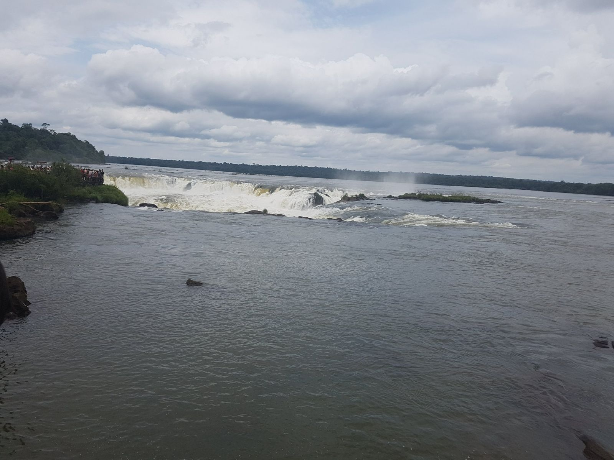
Two minutes later I was closer to the edge of the river, with a branch and some bushes on the bank at my left. The water at the edge is white, and the grey river goes on to the horizon.
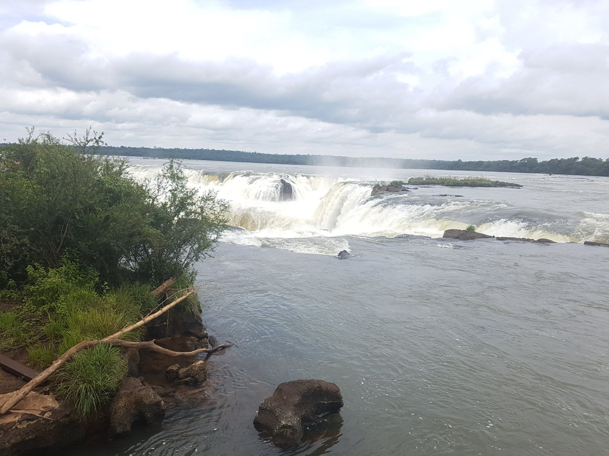
Then I have four photos of the falls themselves, in 4 minutes, from 13:24 to 13:29. They show a curved wall of water, with the brown and yellow color of the river, a cloud of mist at the bottom, and a dark rock sticking out at the top. In the first one a green cliff stands at the left, and a tuft of grass in the corner of the frame is the only thing between the camera and the mist. I think this is the Devil's Throat, the biggest of the falls, but I do not know which viewing point I stood on.
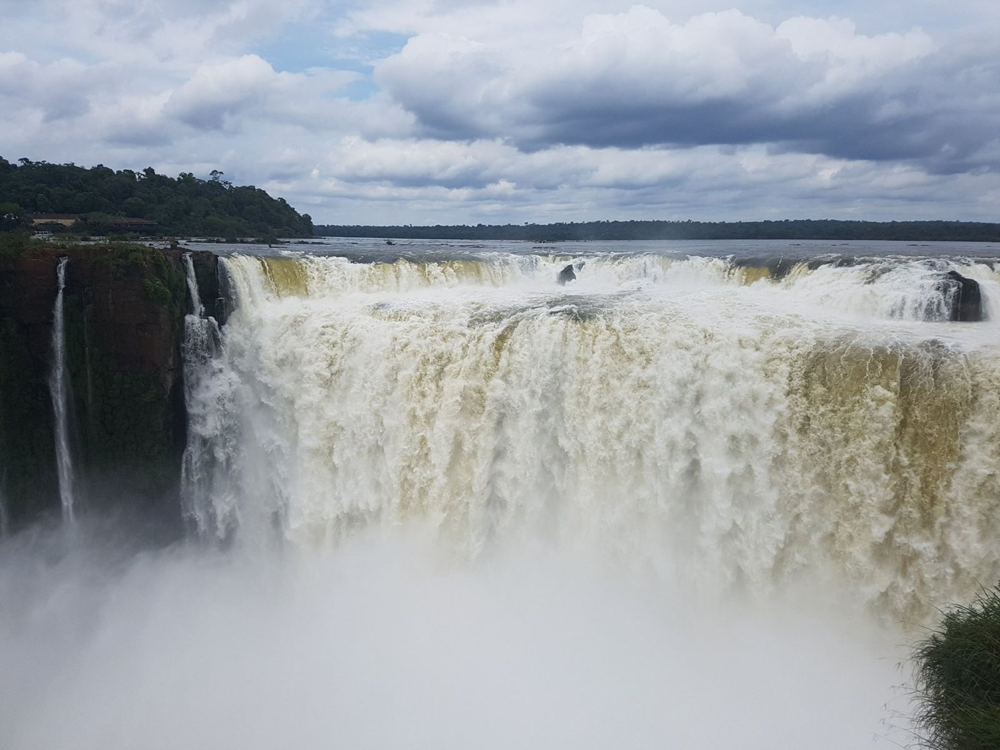
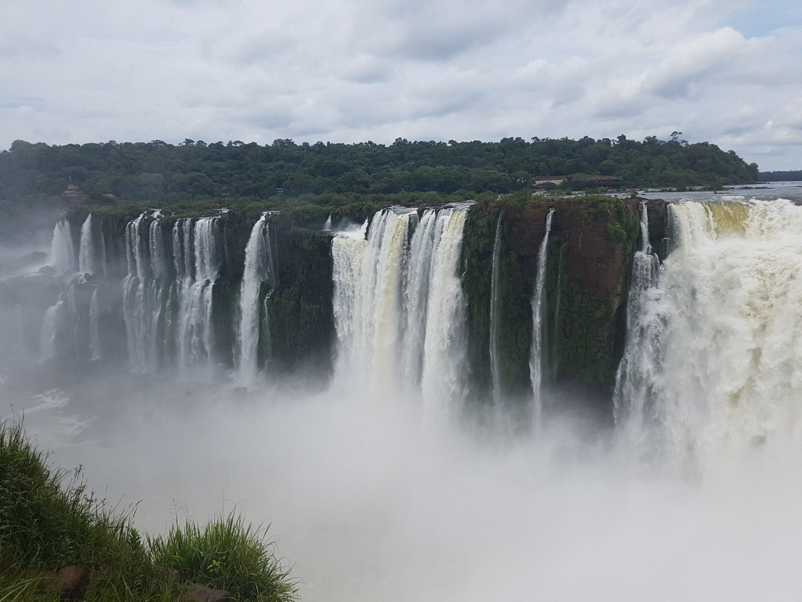
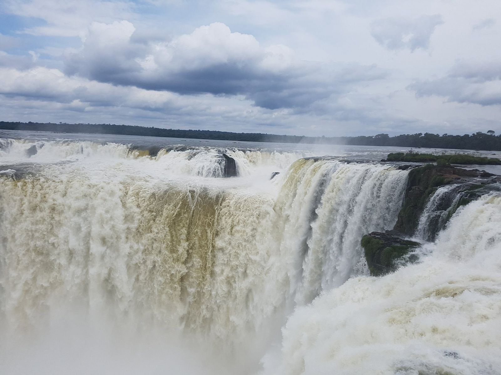
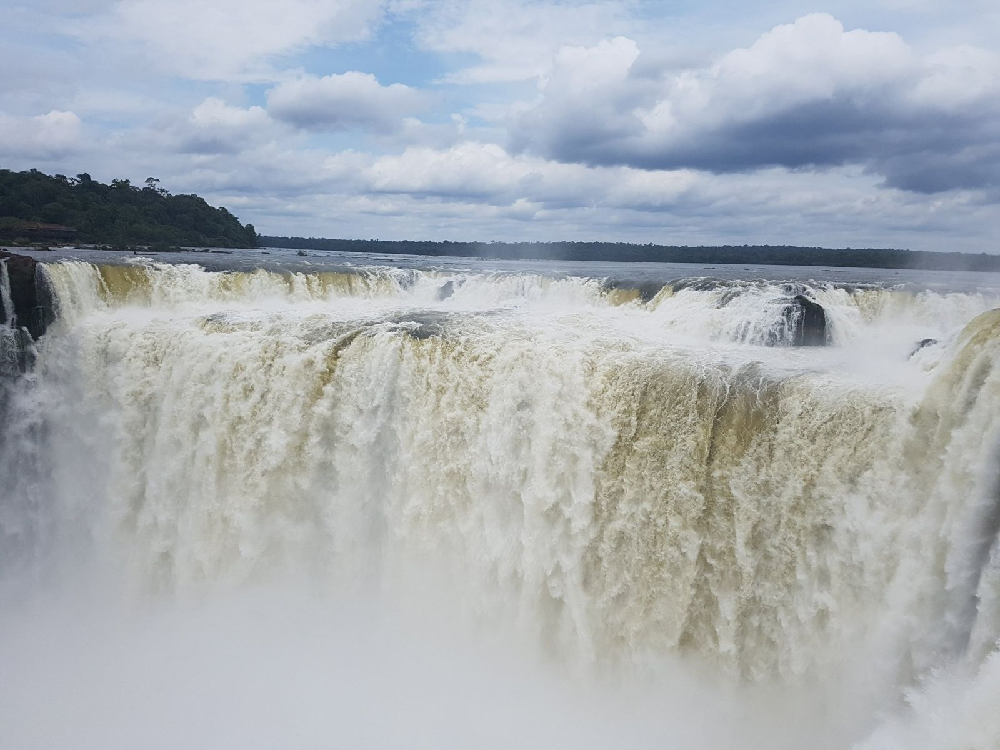
What I found: the national parks authority says that to get to the Devil's Throat you walk a 1,100-meter walkway without stairs, over the upper bed of the Iguazú river, and that the ecological train goes from the Central Station to the Cataratas station and to the Garganta station. The concession brochure says that the drop is more than 80 meters. A notice of the authority says that the walkway to the viewing point is pulled back when the river rises after rain, and another notice says that with a normal flow the railings of the walkway are raised and visitors can get to the viewing point.
What I did not find: the river level on January 28, 2018, and the length of the walkway in 2018. The authority also describes new walkways built after floods, so I cannot say that the route of 2026 is the one that I walked. I also do not know from my photos which viewing point I stood on.
The valley, at 14:44 and 14:52
After the series at the falls, my next photos are one hour and a quarter later. At 14:44 I photographed a green valley full of trees, with falls in the back and a metal railing at the right. At 14:52 I photographed a falls from a walkway, with a leaf of a big plant in front of it, and a rusty railing. I do not know which circuit I was on, and I do not know in which order I did the circuits.
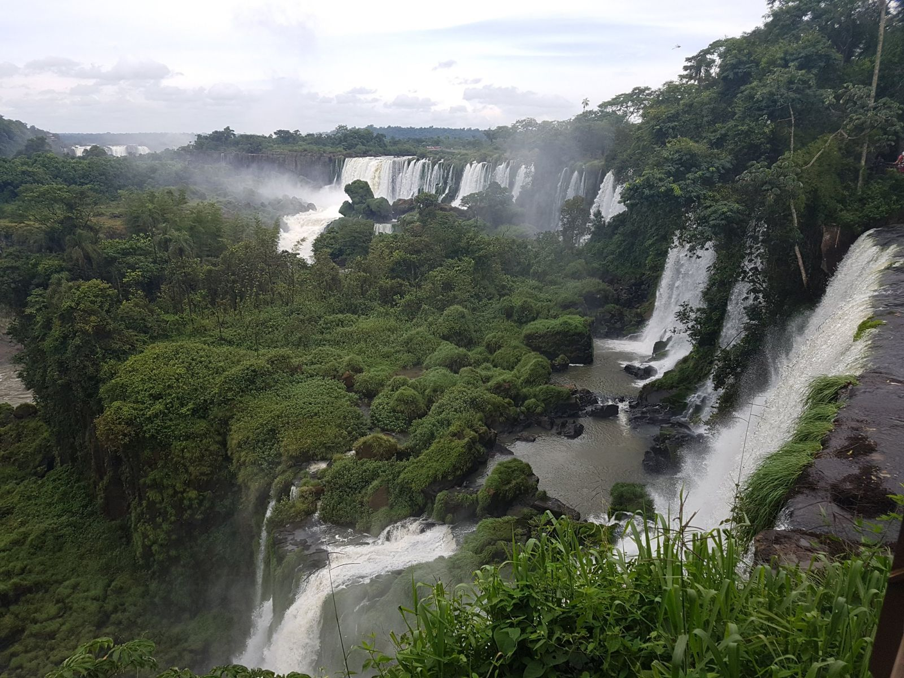
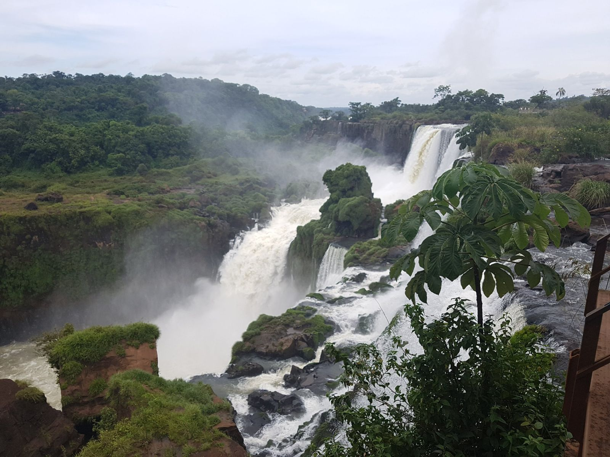
The animal under the walkway, at 15:13
At 15:13 I photographed an animal in the water, seen from above. It has a long dark head, a pointed snout and a back with rows of scales, and it is partly hidden by the glare and the pale water. I think it is a caiman. I took two photos of it, one after the other, and I show one.
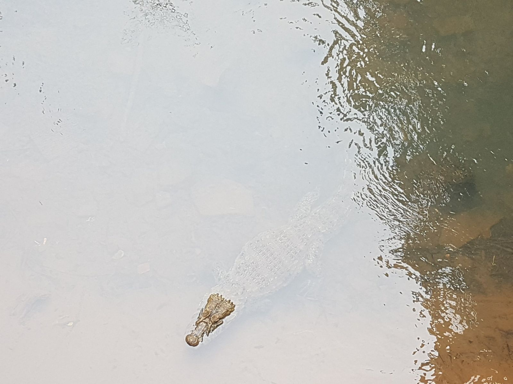
What I found: a Misiones news article from April 2023 says that park rangers saw a big yacaré on the walkways of the Upper Circuit before the park opened, and that the black yacaré usually reaches 2.5 meters as an adult. A travel guide lists yacarés among the animals of the park.
What I did not find: the species of the animal in my photo, its size, or the place where I took the photo. I did not find a rule of the park about how close you may get to the animals.
The Lower Circuit, at 15:44 and 15:46
My last two photos of the park are of the falls and the river from a viewing point among the trees. They show the same view: a red-brown cliff at the left, a row of falls in the back, and a brown river in the front. Google Photos places the photo of 15:46 on the map at the Circuito Inferior of the Iguazú National Park. My last photo is at 15:46 by the phone, so I was in the park for at least 2 hours and 25 minutes, from 13:21 to 15:46.
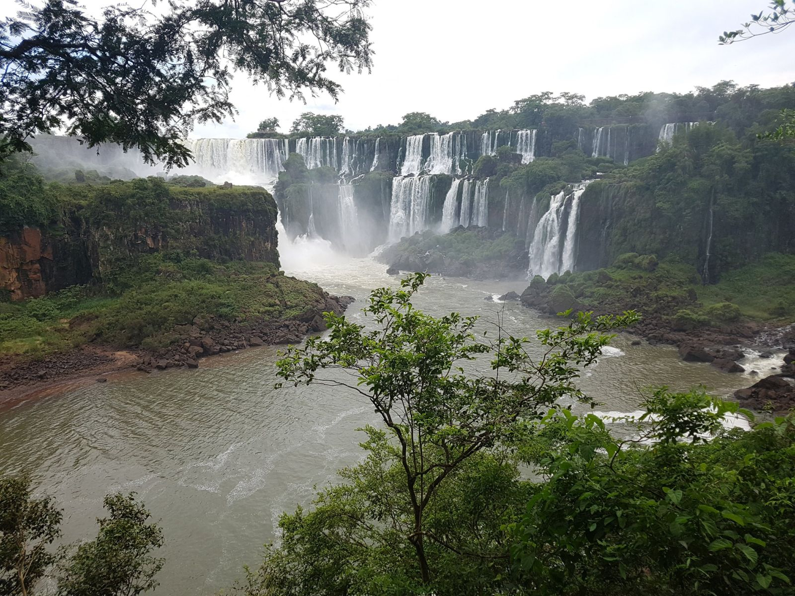
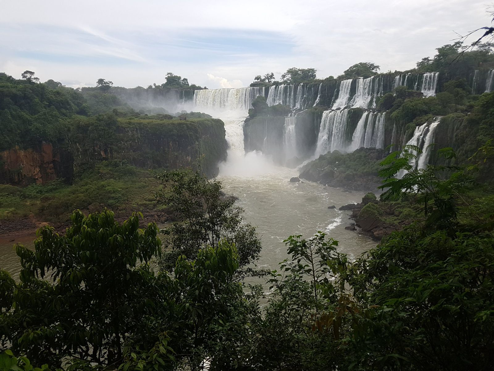
What I found: the national parks authority describes the Lower Circuit as a 1,750-meter walk on walkways with stairs, close to the falls, so that you can feel the drops of the water, and the Upper Circuit as a 1,850-meter one-way walk without stairs, with a view of the canyon where the falls begin. The national tourism site gives different lengths: 1,400 meters for the Lower Circuit and 1,300 meters for the Upper Circuit. The park map of May 2026 gives the Devil's Throat circuit as 2,200 meters and 90 minutes for the round trip.
What I did not find: which lengths are correct, because the official sources do not agree with each other, and which lengths applied in 2018.
January 29: the flight to Buenos Aires
The next day I left Puerto Iguazú by plane to Buenos Aires. I have one photo from that day, taken at 15:54 by the phone clock. Google Photos places it at the Cataratas del Iguazú International Airport. It shows a white plane with the words "andes online.com" in large red letters, parked on a wet apron with a dark rain cloud at the right, and a line of passengers about to climb the stairs at the front. The passengers are far from the camera and none of them is recognizable. I do not remember the flight, the price, how long I waited at the airport, or how I got there from the town.
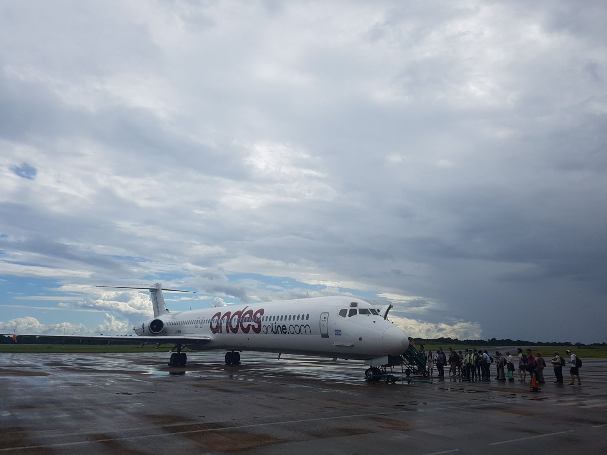
What I found: a flight site says that the flight between Buenos Aires and Iguazú usually takes about 1 hour 54 minutes, and another site lists fares from ARS 106,683 for the months from November 2026 to February 2027, without saying whether it is one way. About the airline: Wikipedia says that Andes Líneas Aéreas began operations on June 20, 2006, with flights between Salta and Buenos Aires. The Cronista says that the company suspended its flights in 2020 because of the pandemic and later came back, and another article says that its troubles began in 2018 with the currency run of that year, and that a court later opened a creditors' proceeding for it.
What I did not find: the price I paid, the flight number, or the schedule of Andes from Iguazú in January 2018, and whether my flight was a regular flight or another kind. I can only say that the plane in my photo has the name of this airline.
What I do not remember
I do not remember what I paid for the hostel, the bus or taxi, the entry ticket, or the flight. I do not remember the day I arrived in Puerto Iguazú, or whether I stayed at the hostel two nights, as I think. I do not remember at which stations I got on and off the train, which circuits I walked and in which order, how long I stayed at each place, what I ate, or whether I did the boat trip. I do not remember where I was when I took the photo of the animal, or whether someone told me what it was. I have no photos from January 27 except screenshots of maps, which I do not show, and none from the town.